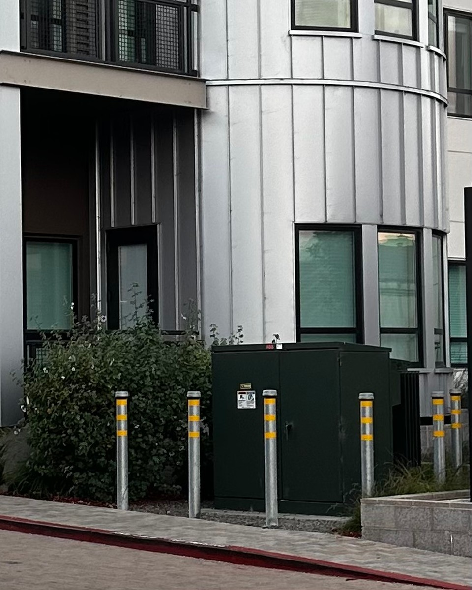
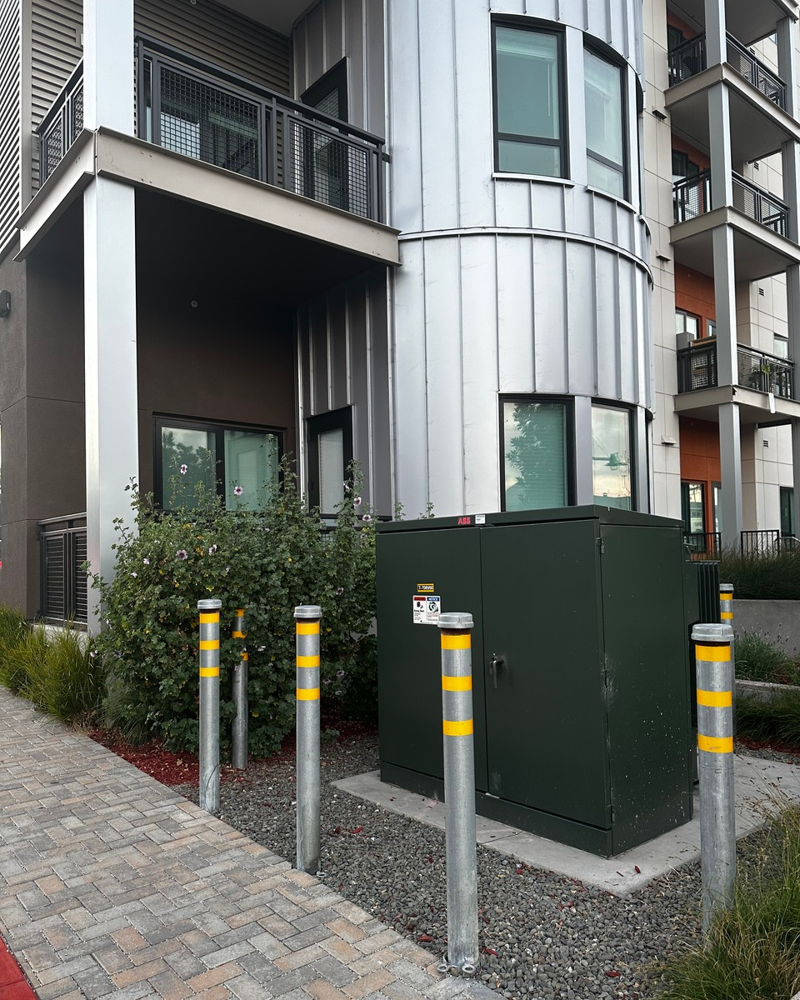
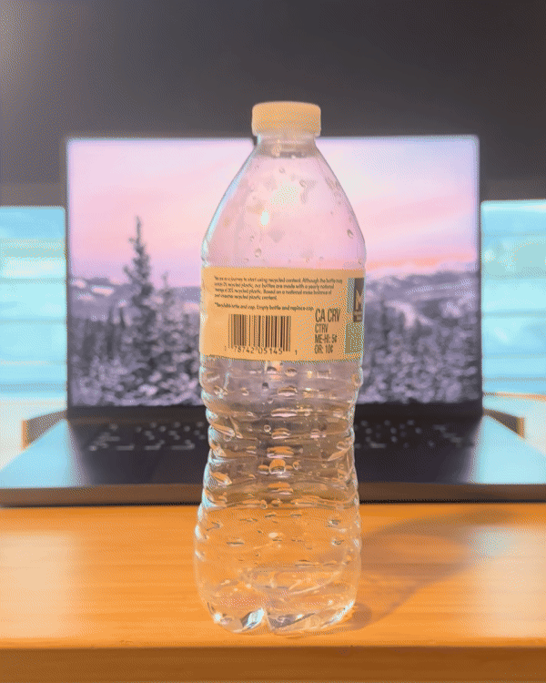

CS 180 · Project 0 · Fall 2026
Perspective Distance · Zoom
01
Selfie · close versus distant
Distance changes the face.
Observation
Moving back reduces facial perspective distortion; zoom only restores the framing.
02
Architectural perspective compression
Distance flattens the scene.


Observation
Greater camera distance compresses depth; zoom only matches the building’s size.
03
The dolly zoom · a moving viewpoint
Hold the subject. Move the world.

Made from 8 aligned video frames with progressive digital zoom added in post.